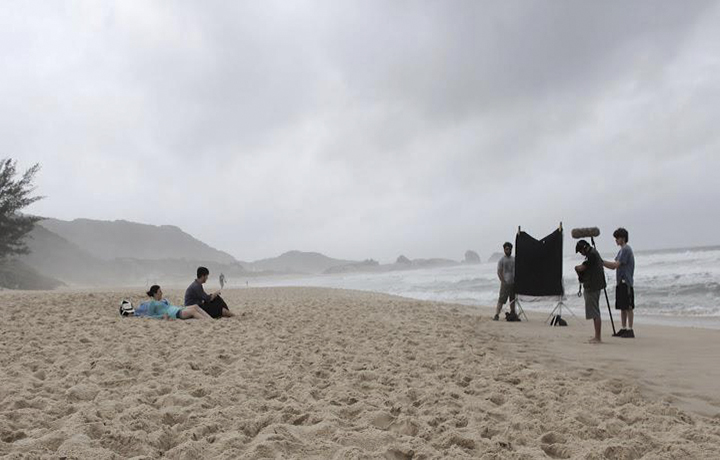
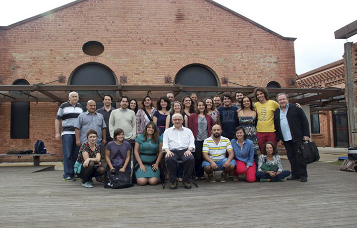

Produção do Projeto de Documentário universitário “Jovens Realizadores da América latina”. Brasil/Colômbia. Ano: 2014.

Organização audiovisual do projeto: Ações para consolidar a transversalidade de
Gênero nasPolíticas Públicas para a Pesca e Aquicultura do MPA. Ano: 2010

Figurino para Longa-Metragem Rendas no Ar desenvolvido por mim durante o workshop de criação compartilhada TRAMAS. Florianópolis-SC. Ano: 2012

Realização e pós-produção do Documentário Universitário: Você pinta como eu pinto? Sinopse: como se deu o processo que apagou mulheres artistas da história da arte. Florianópolis-SC. Ano: 2008.

Assistente de Direção do curta O Relógio. Florianópolis-SC. Ano:2012.

Produção e Assitência de Direção do Documentário Universitário: Desfazendo Gênero. Florianópolis-SC. Ano: 2008.

Oficina Técnica de Restauração Audiovisual. Cinemateca Brasileira/MinC/SAv/UNIFESP. São Paulo-SP. Ano: 2015.
Atuação como Ministrante da Oficina de Animação para Educadores Universitários do Programa Escola da Família. Escola Estadual Arno Hausser. Ilha Solteira-SP. Ano: 2010.
Plataforma de Inovação Social para Mulheres do Audiovisual. Estágio: em construção.